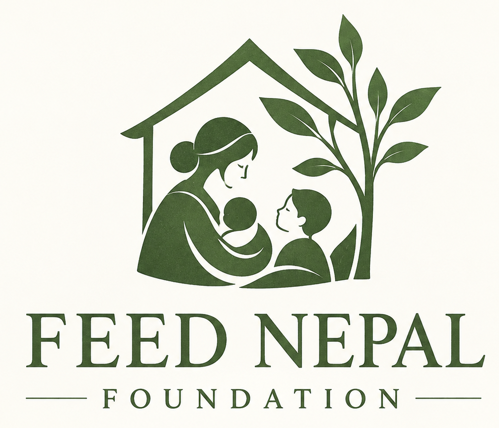

Nourishing mothers. Nurturing children. Strengthening families.
An aspiration to bring nutritious meals, compassionate maternal healthcare and secure family accommodation together in Kathmandu, Nepal.
This is a personal, conceptual vision. Feed Nepal Foundation is not presented as an established organisation, a current service provider, a funding commitment or a fundraising campaign.
The idea
The Feed Nepal Foundation is a proposed humanitarian initiative focused primarily on expectant mothers, infants, children and young families, especially those facing food insecurity or hardship.
At the heart of the idea is a warm, accessible campus with a communal kitchen and dining garden, maternal and child health facilities, temporary family housing, and a modest administration and research centre.
Nourishment
Nutritious daily meals and welcoming dining spaces, with a potential network of community food hubs.
Maternal and child health
A vision for compassionate antenatal, maternity, postnatal and child health services, developed with qualified local partners.
Safety and dignity
Private temporary accommodation and practical support for young families, within a caring community.
Why the kitchen is at the centre
In the proposed design, the kitchen and dining garden sit physically in the middle of the campus. This arrangement expresses the vision's central principle: good nutrition is fundamental to maternal health, childhood development and a secure family life.
The concept document explores the campus layout and a dining space for approximately 100 people across indoor, lightly covered outdoor and garden seating areas.